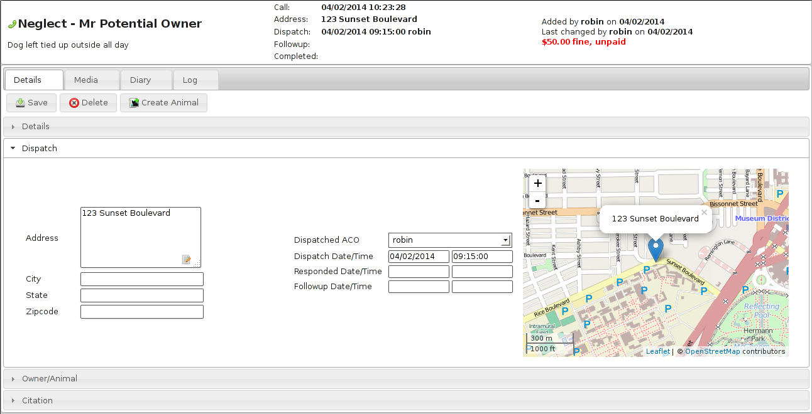
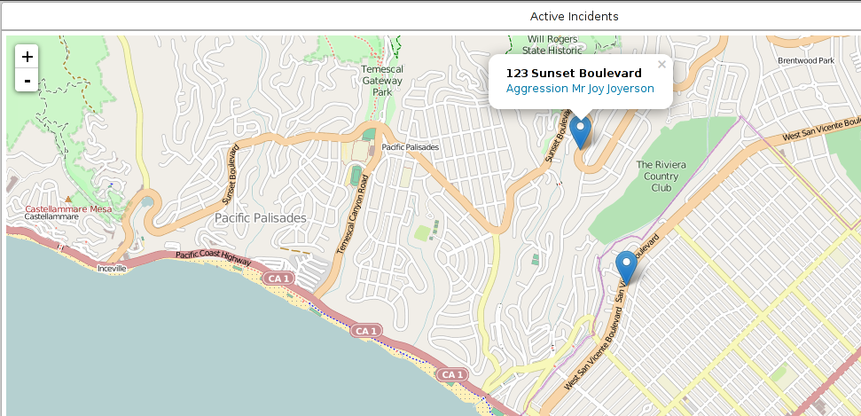
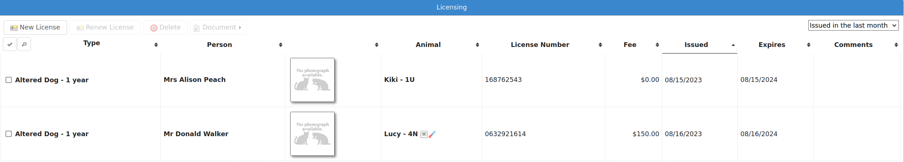

Animal Control¶
Incidents¶

If your shelter deals with them, ASM allows you to track animal control incidents. Animal control incidents store information about the initial telephone call, dispatch of officers, the owner/animal being cited, citations, fines and any victim.
Use the find incident menu item to locate incidents, or use the main database search with the ac: prefix.
Incident Details¶

The incident details screen logs the type of incident, the call information, the victim, notes and completion.
Dispatch¶
Dispatch covers the address an officer was sent to, along with who was dispatched and when they responded. A minimap is shown to the location and a followup date and time can be set for reporting and the system will also remind you when it is due with an alert on the home page.
A “pickup location” can also be chosen here from the system’s available locations (edit them under ). You can use these as a jurisdiction for incidents and animals entering the shelter.
Suspect/Animal and Citation¶
The screen can also store upto 3 suspects the incident refers to, along with some basic information about the animal(s) causing the incident (optionally, you can link to an animal record here if the animal is taken into the shelter or you can use a non-shelter animal to store more information if required).
The citation tab allows brief information about any citations given relating to the incident along with any fines levied. Fines can have a due and paid date. If the due date passes without being paid, it will appear on reports and as an alert on the home page.
Alerts¶

The animal control module will raise alerts for unpaid fines, calls that have not yet resulted in dispatch, calls that do not have a completion date and code, incidents that are due for followup today and traps due for return.
Map of active incidents¶
ASM can also plot you a map of currently active animal control incidents. This can be useful for route planning, spotting trends, etc.
Equipment Loans¶
ASM can keep track of traps or equipment loaned to people along with deposit amounts (if your shelter does trap/equipment rental, you can also use the payments tab to track rental payments). Active loans can be viewed from the menu and an equipment loan tab will appear on each person record.

Loans have a due date and return date. If the due date goes past today without a return date, the record will be highlighted and an alert shown on the home screen.
Licensing¶
Similarly, ASM can track animal licenses issued to owners. The license will appear on the license tab of both animal and person. License records hold the number, the type of license, the fee and the issue and expiry dates. Payments for licenses should be tracked under the animal/person payment tab.
It is very common for licensed animals to not be shelter animals (ie. Never form part of the intake of the shelter). In this situation, the animal record for the licensed animal should have the “Non-Shelter Animal” box ticked appropriately on its record with the original owner set to the current owner. It is also possible to not include an animal link and just put a few details in the comments field instead if you deal with enough licenses to make creating non-shelter animal records unfeasible.
The licensing screen has a number of filters that can be set by clicking the dropdown in the upper right corner. Licenses issued and expiring over a period can be selected.
You can search for licenses by their number in the main ASM search box. You can also use the li: prefix to only search license numbers.